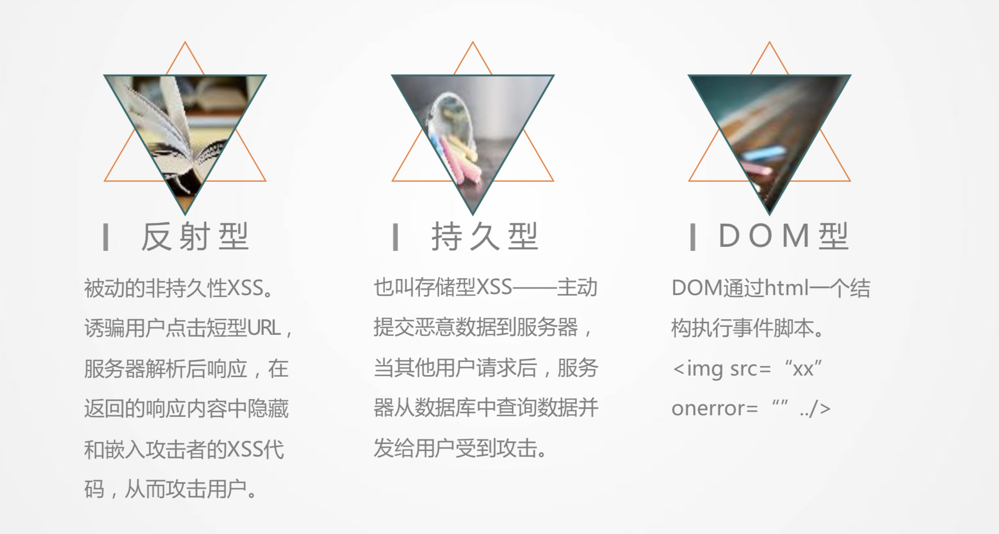
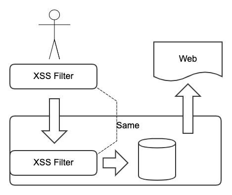
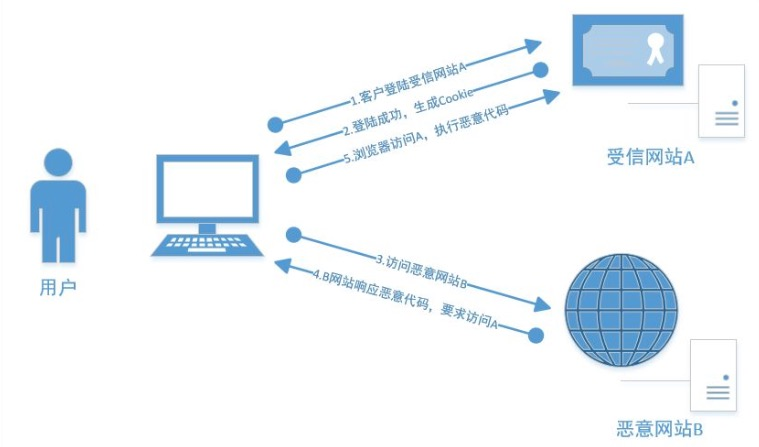

web 安全
Web 前端的黑客攻防技术是一门非常新颖且有趣的黑 客技术，主要包含 Web 前端安全的跨站脚本(XSS)、 跨站请求伪造(CSRF)、界面操作劫持、WebShell 这 几大类，涉及的知识点涵盖信任与非信任关系、Cookie 安全、Flash 安全、DOM 渲染、字符集、跨域、原生态 攻击、高级钓鱼、蠕虫思想。
跨站脚本(XSS)
XSS 攻击通常指的是通过利用网页开发时留下的漏洞，通过巧妙的方法注入恶意指令代码到网页，使用户加载并执行攻击者恶意制造的网页程序。这些恶意网页程序通常是 JavaScript，但实际上也可以包括 Java、 VBScript、ActiveX、 Flash 或者甚至是普通的 HTML。

- 持久型跨站：最直接的危害类型，跨站代码存储在服务器（数据库）。
- 非持久型跨站：反射型跨站脚本漏洞，最普遍的类型。用户访问服务器-跨站链接-返回跨站代码。
- DOM 跨站（DOM XSS）：DOM（document object model 文档对象模型），客户端脚本处理逻辑导致的安全问题。
主要危害
- 盗取各类用户帐号，如机器登录帐号、用户网银帐号、各类管理员帐号
- 控制企业数据，包括读取、篡改、添加、删除企业敏感数据的能力
- 盗窃企业重要的具有商业价值的资料
- 非法转账
- 强制发送电子邮件
- 网站挂马
- 控制受害者机器向其它网站发起攻击
跨站脚本(XSS)防患

- 入参字符过滤 xss 攻击防范
- 出参进行编码
- 入参长度限制
- 设置 cookie httponly 为 true
CSP 白名单制度
1. 一种是：通过 HTTP 头信息的 Content-Security-Policy 的字段。 1. 一种是：在网页中设置<meta>标签，
<meta http-equiv="Content-Security-Policy" content="script-src 'self'; object-src 'none'; style-src cdn.example.org third-party.org; child-src https:">
CSRF 跨站请求
CSRF（Cross-site request forgery）跨站请求伪造，也被称为“One Click Attack”或者 Session Riding，通常缩写为 CSRF 或者 XSRF，是一种对网站的恶意利用

主要危害
1.被黑客抓包，捕获请求地址，直接修改参数。
- 加入验证码，判断 reffer。 这些参数前端都是可以篡改的。
解决方案
- 验证 HTTP Referer 字段；
- 验证 Token 请求。每次动 强验证码+动态 Token 请求 态刷新。
- 在 HTTP 头中自定义属性并验证。